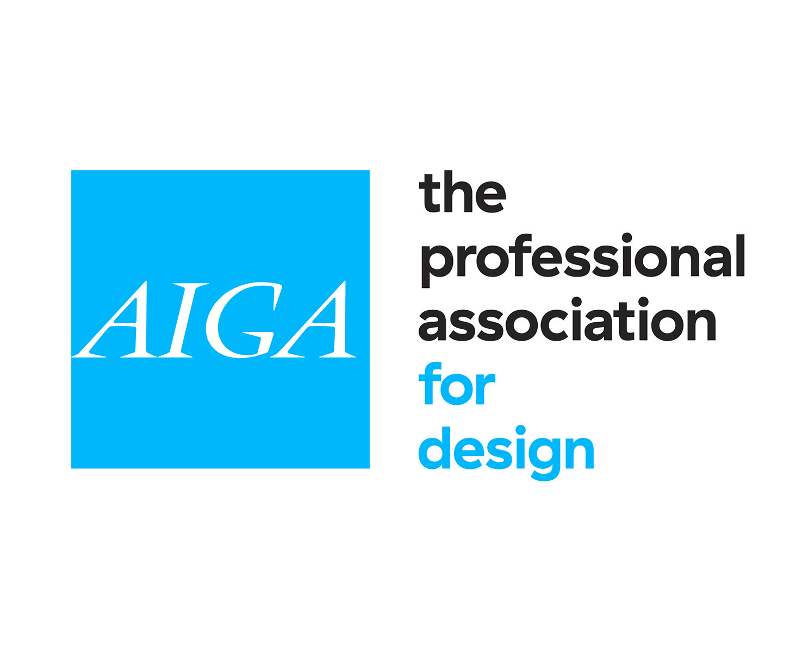

Recognition
Work that got noticed.

IBM Artemis Program — Top 7 of 2,000
Selected by IBM's worldwide CE VP from 2,000 practitioners worldwide. A handpicked cohort charged with transforming how pre-sales operates as a business. This isn't a participation award. It's a recognition that the way I work sets a standard worth scaling.
The Candle Power — Yankee Candle Pop-Up
Recognized for innovative storytelling, creativity, and measurable results at the Yankee Candle pop-up experience.

Accepted into the AIGA Archives
Storytelling and experience design work exploring the impact of color, material, and finish on business outcomes for CPG company Newell Brands.